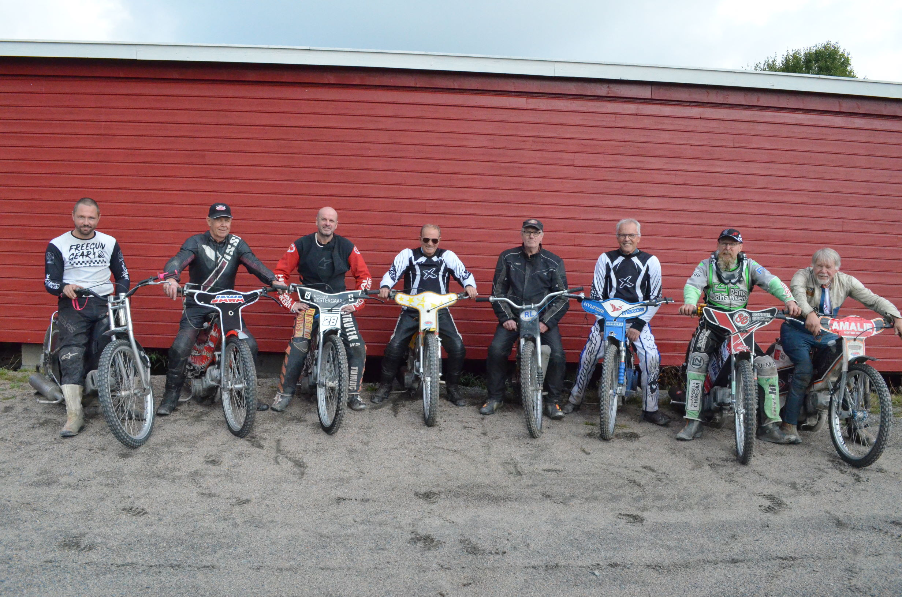

NMK Kristiansand har aktive førere i Speedway (MC) og Offroad (bil)
Vi driver Sørlandets eneste- og en av Norges fineste Speedwaybaner i Sørlandsparken.
Klubben åpnet i 2016 Kristiansands første og eneste kjørefelt for offroad med 4x4 biler - "Offroadparken" Et område på drøye 60 mål med variert terreng og suveren beliggenhet.
Velkommen
Velkommen til NMK Kristiansand !
Har DU lyst å prøve Speedway ?
Vi har utstyr og sykler til leie å kan hjelpe deg på en av treningene våre eller en avtalt dag utenom om du ønsker å prøve i roligere omgivelser.
Sørlandsparken Speedwaybane har åpen trening hver Tirsdag 16-18 og Lørdag 12-16.
Om Speedway
Speedway er en høyst spesialisert motorsykkelidrett. Kjøringen foregår på en spesialbygget oval grusbane på 275-400 meters lengde, og alltid mot klokkens dreieretning. Syklene er også meget spesielle, med en kraftig ensylindret metanoldrevet 500 cc motor. Den sitter i en spartannsk ramme med store smale hjul.
Speedwaysporten preges av en spektakulær kjørestil, hvor syklene kjøres med hjulspinn og bredsladd gjennom svingene. Syklene har hverken bremser eller gir, og i praksis kjører man med full gass gjennom hele heatet, bortsett fra et tidels sekund før svingen, hvor man slår av gassen for å vippe sykkelen ut i sladd. Inn i svingen er det full gass, og føreren balansere vekten mellom venstrefoten som sklir på grusen i en spesiallaget jernsko, og sykkelen.
Om speedwayidretten virker spesiell i dag, så må det også sies at det er selveste urmotorsykkelsporten. Den var en av de første grenene som oppsto, og både syklene og konkurransereglementet er så godt som uendret siden 20-tallet! En hyggelig bieffekt av meget spesifikke krav til syklene som brukes, er at speedway er en svært rimelig motorsykkelidrett. Fire kjørere startet samtidig i heat som går over fire runder. Det kjøres stevner med 15-20heat avhengig av antall deltagere. Alle skal kjøre mot alle, og for hvert heat utdeles poeng etter heatplassering. De fire som har samlet flest poeng møtes til finaleheat. Hvert heat varer ett-to minutter og et stevne går over 1,5 - 2 timer.
Speedway er en svært publikumsvennlig idrett, og stemningen rundt banen kan sammenlignes med fotball- eller hockeykamper. Andre konkurranseformer i speedway er langbaneløp og isracing. Langbaneløp arrangeres på travbaner, og hvor det da brukes sykler med hele to gir. Førstegiret brukes til starten, mens resten av løpet kjøres på andregir. I isracing, som foregår på skøytebaner, brukes hjul med 28 millimiter lange pigger. Dette krever selvsagt en helt annen kjørestil, for de kraftige piggene tillater den mest ekstreme nedleggsvinkelen gjennom svingene av alle motorsykkelgrenene.
NMK - Kristiansand har sykler og kjøreutstyr til utlån for dem som vil forsøke seg en kveld. Ingen grunn til å nøle.
Syklene
500-klassen er for 500 cc firetaktere med ca. 80 hestekrefter, og drivstoffet er metanol. Syklene er relativt enkle og derfor rimelig i innkjøp. I tillegg finnes en "knatteklasse" for sykler på 80 cc, som har bensindrevne totakstmotorer.
Sikkerhet/Utstyr
Påbudt med hjelm/kjørebriller, standard motocross utstyr, hansker og speedwaystøvler. I tillegg brukes en jernsko utenpå venstre støvel.
Førerkrav/Aldersgrense
For å stille til start og trening kreves en speedwaylisens. Du kan ta lisenskurset hos NMK-Kristiansand Speedway på vår hjemmebane, Sørlandsparken Speedwaybane. Man kan kjøre 50 cc fra man er 5 år, 85/125 cc fra man er 8 år, 500 cc fra året man fyller 16 år.
Løpene i Norge
Norsk Speedway Liga - en lag serie som går over flere stevner hvor vinnerlag blir ligamestere.
NM Lag - Kjøres som et enkelt stevne hvor vinnerlaget blir Norgesmester i lag.
NM Individuelt - Kjøres som et enkelt stevne hvor vinner blir Norgesmester.
NM Par - Kjøres som et enkelt stevne hvor vinner parret blir Norgesmeter i par.
Norges Cup - Kjøres kun av 85cc (ungdom mellom 13- 15 år) hvor vinner blir Norgesmester 85cc.
Åpne Najsonaleløp - Perfekte stevner for nybegynnere og de som ønsker å utvikle seg videre om man ikke er kvalifisert til et lag.
Kort om banen
Sørlandsparken Speedway bane driftes av NMK Kristiansand (Norsk Motorsportklubb Kristiansand). Banen var ferdig bygget våren 2011 og siden da har det blitt arrangert treninger, NM - finale, Norsk Speedway Liga,.Sørlandsparken Speedway bane er en nasjonalt godkjent bane, . Lengden på banen er 285 meter. Banebredden er 11 meter på langsidene og 15 meter i svingene. Banedekke består av fin grus (0-4 og nedover) og leire. Banen består av depot med plass til 18 sykler og kiosk.
Om Offroad
Biltrial er en ferdighetsdisiplin som handler om å kjøre avgrensede baner med et gitt antall porter med varierende vanskelighetsgrad som skal forseres i riktig retning og rekkefølge. Hastigheten er som regel lav men de tekniske utfordringene er desto større og det hender ofte at biler blir stående fast eller velter. Bilene er heldigvis godt sikret slik at et velt sjelden gjør skade på annet enn litt karosseri og førerens stolthet.
Aust- og Vest Agder har flere førere i blandt de beste i Norge og Europa.
I biltrial inndeles bilene i flere klasser, og kjøres i hovedsak etter et internasjonalt biltrialreglement. Bilene deles inn i følgende klasser : original, standard, modified, pro-modified og prototype.
Inndelingen går på hvor mye bilene er ombygd. F.eks så skal bilene i original klassen være originale med unntak av bur og evt. sveist diff bak.
I standard klassen tillates små endringer som f.eks litt større hjul, bruk av sperrer i begge aksler, bytte av motor og fjerning av støtfangere.
Modified er i dag den klassen med flest deltakere. Her kan det meste bygges om, men det stilles krav til at ramme og karosseri skal være tilnærmet originalt. Ellers kan det byttes aksler, motor, drivverk, hjul m.m.
Pro-modified er ganske likt modified, men her tillates ennå litt mer modifiseringer som f.eks styrebrems og portalaksler. Her stilles ikke heller like strenge krav til gjenkjennelighetsverdien på bilen det bygges på.
Den "frieste" klassen i biltrial er prototype. Dette er biler som er helt "hjemmelaget" ofte bare et rørbygg. Her kjøres med styring på begge aksler, portalaksler, ubegrenset hjulstørrelse, styrebrems, og er biler som klatrer og kryper i det tøffeste terrenget.
NMK Kristiansand sine biltrialførere kjører lokale løp/cuper, Norgescup, Nordisk Mesterskap og Europeisk Mesterskap og har gode meritter å vise til.
Videre kjøres det i flere grener innenfor offroad i Norge. Vi har offroadcross som i prinsippet er ekstrem bilcross med biltrialbiler. Det kjøres monsterrace og formula offroad.
I formula offroad kjøres det med "hjemmelagede" rørbygg, store amerikanske v8 ofte 1000 hk +- og store padledekk for og kunne få bra grep i sand. Konkurransene her kjøres i tilnærmet loddrette vegger med grus og sand.
Klubben
For å få nyheter, oppdateringer og kontakt med klubben, vennligst bli medlem av vår Facebook-gruppe. Denne gruppen er vår kommunikasjonskanal med klubbens medlemmer.
Facebook: NMK Kristiansand